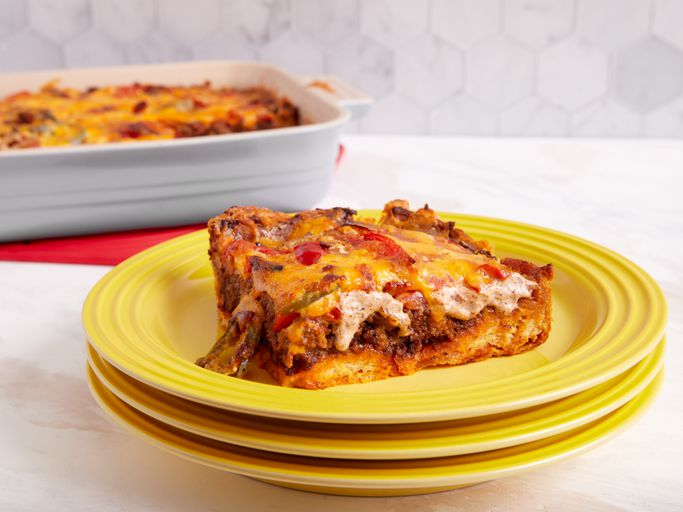

John Wayne Casserole

Description
The John Wayne casserole is a hearty and satisfying dish that's sure to
please everyone at your table. Despite the name, the John Wayne Casserole
wasn't popularized by the actor himself, but by a fundraiser cookbook
"Cooking with Love from Cara and Her Friends" and the University of
Mississippi Medical Center.
Ingredients
-
Biscuits: This convenient dinner starts with a can of
refrigerated biscuits.
-
Beef: You'll need a pound of ground beef for this meaty
casserole.
-
Taco seasoning: Use store-bought taco seasoning or make
your own with our DIY recipe.
-
Vegetables: Sliced onions and bell peppers are sautéed
together, while sliced tomatoes are layered with the other ingredients.
Jarred jalapeños, meanwhile, spice things up a bit.
-
Sour cream and mayonnaise: A mixture of sour cream and
mayonnaise is creamy, tangy, and adds tons of welcome riches.
-
Cheese: Because isn't everything better with shredded
Cheddar cheese? You could use shredded Pepper Jack if you like a little
extra heat.
Directions
-
Make the crust: Press the biscuit dough in the bottom
and up the sides of a prepared baking dish. Bake in the preheated oven
until lightly browned.
-
Cook the meat: Cook the beef until crumbly. Drain the
fat, stir in seasoning and water, and bring to a boil. Reduce the heat
and simmer. Transfer the meat to a bowl.
-
Cook the veggies: In the same pan, cook the sliced
onions and peppers until tender.
-
Make the creamy layer: Combine the sour cream, mayo,
1/2 of the Cheddar, and 1/2 of the cooked veggies in a bowl.
-
Layer and bake the casserole: Layer the meat, tomatoes,
onion-pepper mixture, jalapeños, and sour cream mixture on top of the
biscuit dough. Sprinkle it with cheese. Bake in the preheated oven until
the cheese is browned and bubbly.